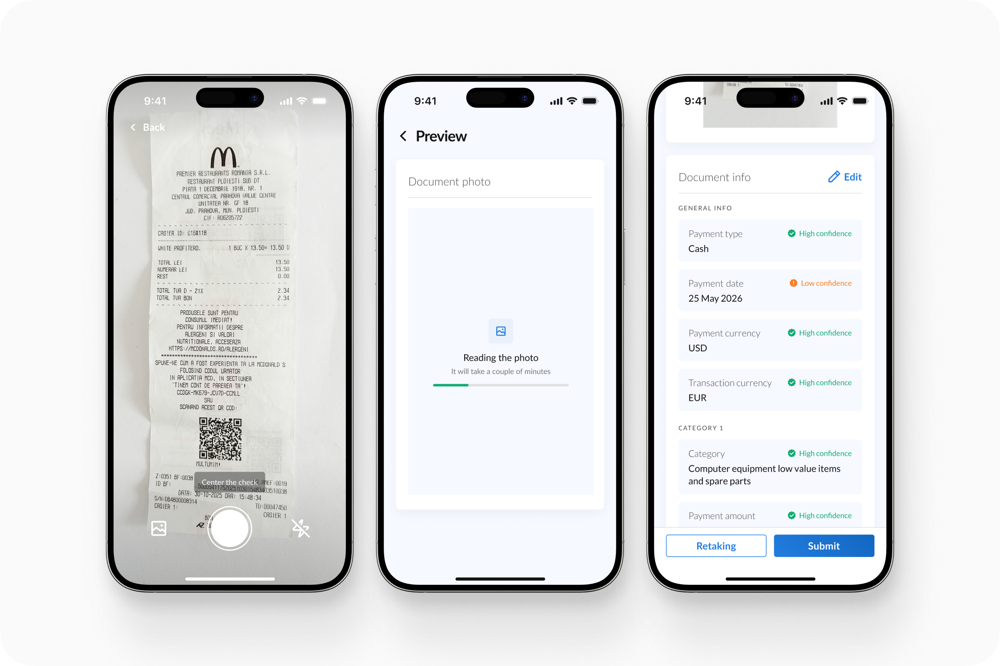
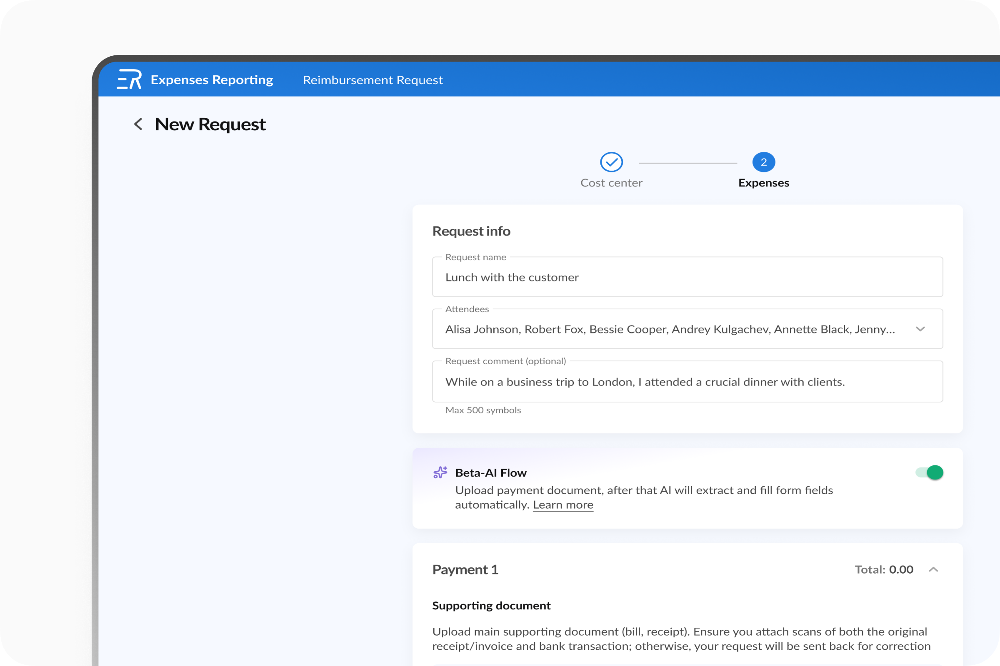
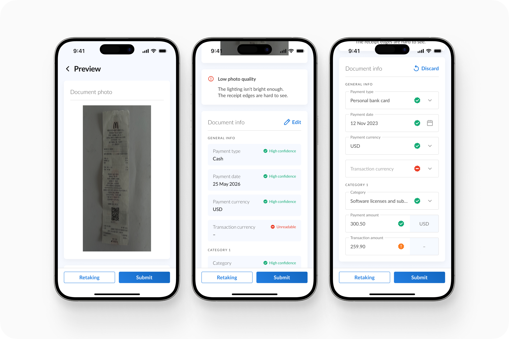
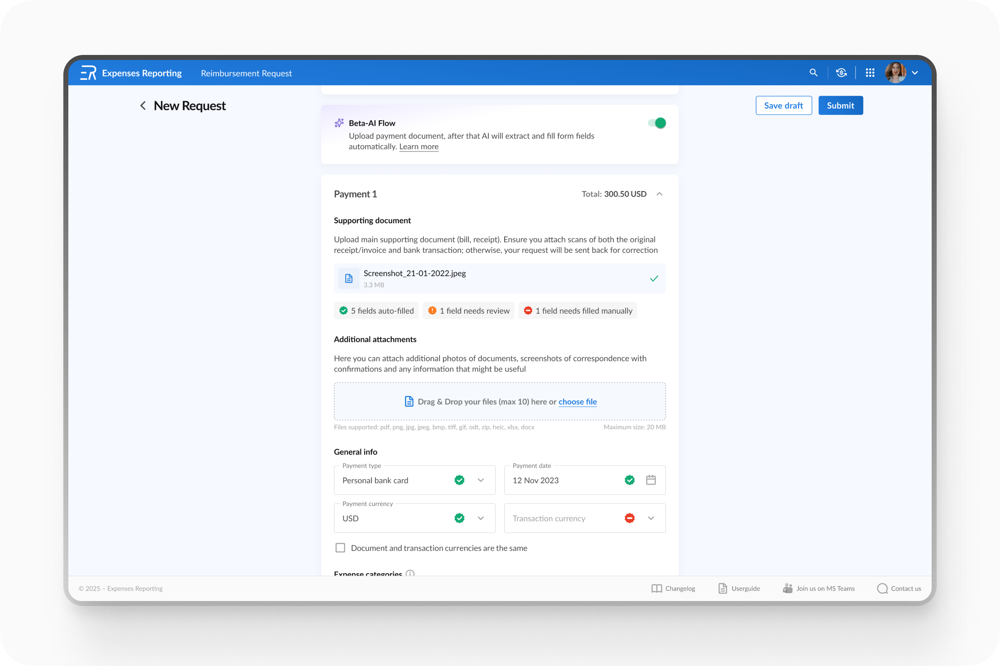
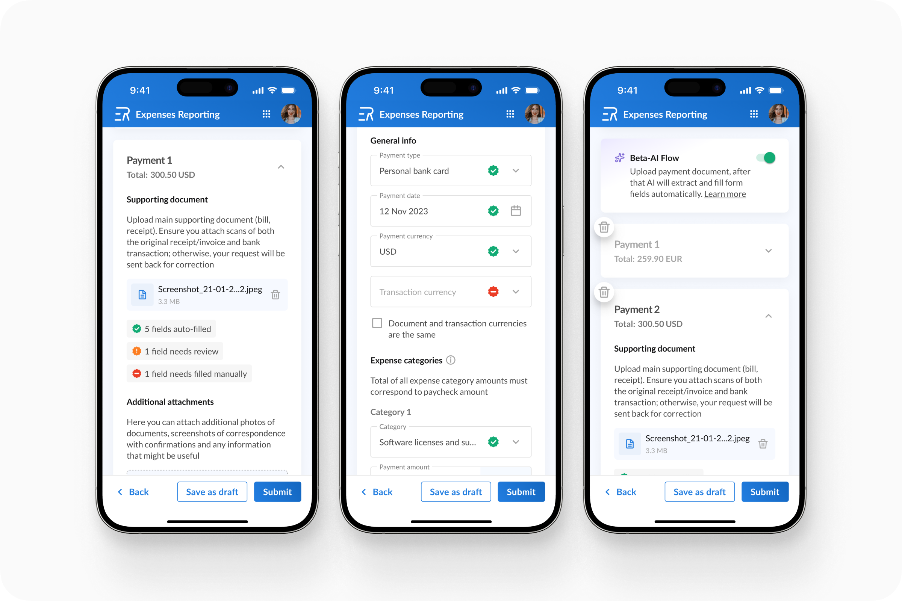
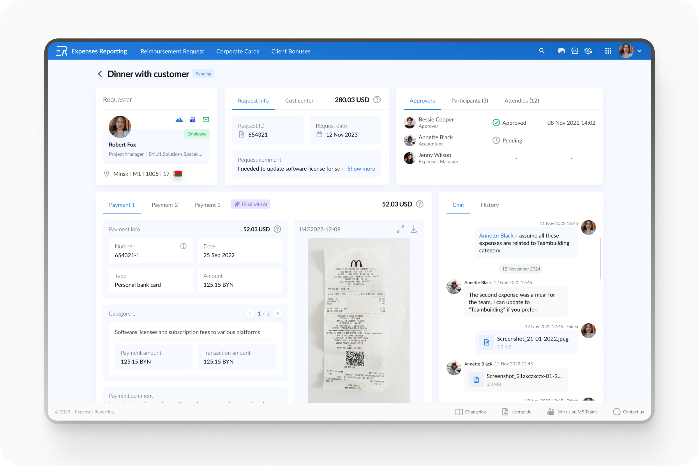

AI Autofill Forms Feature
Intro
AI-powered form autofill from receipts, built for two modules: expense reimbursement and corporate card reporting. Both processes relied on manual data entry from receipts and slow manual approval — the goal was to speed this up with AI without losing user trust in the result.


Approach
I designed AI autofill as an opt-in mode (Beta-AI Flow) embedded in both modules: the user uploads a receipt, AI extracts and fills in the form fields, and each field gets a confidence status — auto-filled, needs review, or needs manual input.
For the mobile version, I separately designed a camera capture mask to improve recognition accuracy. I considered the flow not just for the person submitting the request, but also for the approving side — the manager and accountant, who can see which data was AI-filled and discuss uncertain fields directly in the request's chat.



Key Decisions
- Two-level AI confidence signal. Beyond per-field status, I added a document-level summary — "5 fields auto-filled, 1 needs review, 1 needs manual input." This lets the user gauge trust in the result at a glance, without checking every field individually.
- Trust signal extends to the approving side. The approval screen shows a "Filled with AI" badge for accountants/managers — this sets the right level of scrutiny during review, rather than creating the illusion that the data was manually entered and therefore doesn't need re-checking.
- Opt-in, not forced automation. Beta-AI Flow is a toggle, not a mandatory step. At the beta stage, this reduces risk — users can skip autofill if they don't trust it yet or prefer filling the form manually.

Result
The feature recently shipped to production, so there's no quantitative data yet on time saved or recognition accuracy. The expected impact is faster submission and approval, since both the requester and the approver can focus attention on low-confidence fields instead of reviewing the entire form. I plan to revisit this case with metrics once usage data accumulates.